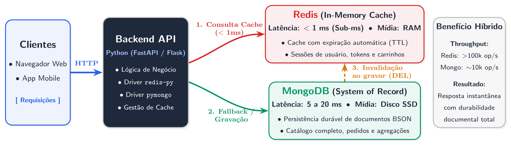

Aula 03
Sábado Letivo (10/10/2026)
Estudo Remoto em Casa
MongoDB + Redis
Prática Autônoma de Banco de Dados: MongoDB, Redis e Padrão Cache-Aside
Disciplina: Banco de Dados Não-Relacionais (ADS16) | Docente: Prof. Me. Reginaldo Pereira Fernandes (IFCE Campus Tauá)
Laboratório Interativo no Navegador
Simulador do Padrão Cache-Aside (MongoDB + Redis)
TTL Cache: 60s
Experimente na prática como o Redis em memória RAM acelera consultas a dados persistidos no MongoDB. Observe a transição de um Cache MISS inicial (~10 ms) para um Cache HIT instantâneo (~0.1 ms), e teste a Invalidação Imediata ao atualizar o preço.
Redis (In-Memory Cache)
Cache Vazio
Chave:
cache:produto:NOT-DEL-01
Valor em RAM:
NULL (Miss)
Tempo de Resposta Típico:
< 0.5 ms
MongoDB (System of Record)
Persistente
Coleção:
ecommerce_taua.produtos
Preço Atual no Banco:
R$ 4.299,90
Tempo de Resposta Típico:
8.0 a 15.0 ms
Terminal de Eventos e Latência
--:--:--
[INFO] Simulador inicializado. Clique em 'Consultar Produto' para disparar a primeira requisição.
Visão Geral da Arquitetura Híbrida
Diagrama original compilado em TikZ representando a separação de responsabilidades entre MongoDB e Redis.
